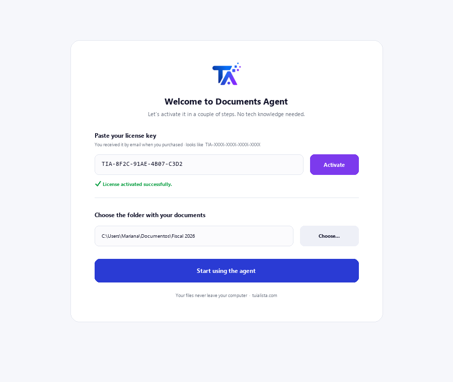
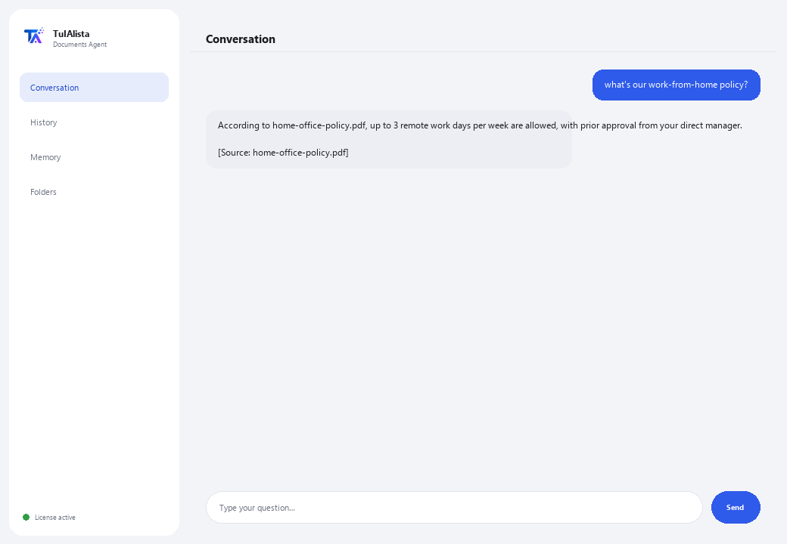

Documents Agent
Searches inside your documents for you and answers in plain language, citing which file the answer came from.
What does it solve and what do you need?
Every company has folders full of contracts, manuals, records, policies and reports... and when someone needs a fact, they have to open file after file until they find it. This agent reads everything and answers your question directly, citing the exact file the fact came from.
- You need: your license key (TIA-XXXX-XXXX-XXXX-XXXX) and the folder with your documents. No Python, no technical knowledge.
- First result in under 5 minutes: install, activate, pick your folder, and just ask whatever you need to know — there are no commands to learn.
- Your documents never leave your computer — reading and indexing runs locally.
soporte@tuialista.com or visit tuialista.com/soporte — we usually reply the same business day.1 What this agent does
It's the simplest agent in the catalog. You point it at the folder where you keep your documents and it:
- Reads all of them (PDF, Word, text and Markdown), without you opening them one by one.
- Answers your questions in plain language: “what does the manual say about vacation time?”
- Cites the file it got each fact from, so you can verify it.
- If the answer isn't in your documents, it tells you instead of making something up.
The result: you find any fact in seconds, without remembering which file it was in.
2 Installation (2 minutes)
For Windows. No constant internet connection needed, and nothing gets uploaded to the cloud.
Download the installer from tuialista.com/descargar (Documents agent) and open it. It creates a desktop shortcut with the logo — no Python or terminal needed.
Double-click the new icon. Paste your license key (you received it by email when you bought it) and click Activate. You'll see a green checkmark once it's valid.
Select the folder with your documents and click Start using the agent. Next time it starts right up — it remembers your key and your folder.

3 How to use it
The agent opens a chat window, like a messaging app — not a programmer's black screen. This is the most direct agent in the catalog: there are no commands to memorize. You type your question in your own words in the text box below, hit Send (or Enter), and the agent searches your documents for the answer:

If no document has the information, the agent tells you clearly instead of making up an answer — that saves you from searching in vain. Type exit (or salir) to finish.
4 Common use examples
Find a fact without opening every file
what's the process to onboard a new vendor? — the agent searches all the documents and replies citing the correct file.
Check a company policy
how many vacation days do I get in the first year?
Review a file
what delivery date was agreed on in the Project Alpha file?
Find which document mentions something
which file mentions the warranty for the air conditioning unit? — the agent tells you which document it's in, so you can go straight to it.
5 Frequently asked questions
Do my documents get uploaded to the internet?
Do I need internet to use it?
What file formats does it accept?
Can it read a scanned PDF?
What language does it reply in?
How many documents can it handle?
Are the answers 100% accurate?
Can I change the documents folder?
Does it save a history of my questions?
Does it replace a search engine or document manager?
6 Troubleshooting
It won't read a PDF / shows “PDF not read”
It says “Invalid license” or asks to reconnect
“No AI providers configured” when asking a question
It shows “0 documents indexed”
None of these fixed your problem? Write to us directly — we'll gladly look into it with you.
soporte@tuialista.com or visit tuialista.com/soporte — we usually reply the same business day.7 Privacy and confidentiality
Your documents never leave your computer.
- The agent reads and indexes the files locally, on your own machine. It doesn't upload them to any server or share them with anyone.
- Searching and selecting the relevant chunks happens on your machine.
- The only thing that travels over the internet is: (1) a check that your license is active — which doesn't include your documents' content —, and (2) when you ask a question, a fragment of the relevant documents is sent to the AI engine to draft the reply.